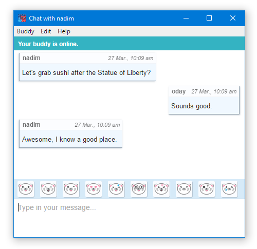

Discutez en toute confidentialité.
Cryptocat est un logiciel libre dont la mission est très simple : permettre à chacun de discuter de façon vraiment privée avec ses amis.
- Open source. Cryptocat est public et son code est libre et ouvert.
- Chiffré par défaut. Chaque message est chiffré. Toujours.
- Plus de sécurité. Des discussions surs même si vos clés sont dérobés.
- Appareils multiples. Tous les appareils liés recevront vos messages de façon sécurisée, même si vous êtes hors-connexion.
- Partage de fichiers. Partagez des fichiers en toute sécurité (à venir).
- Chat de groupe. Discutez avec un groupe d'amis à la fois (à venir).